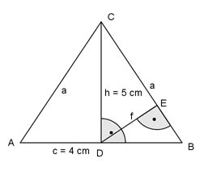
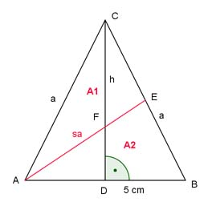
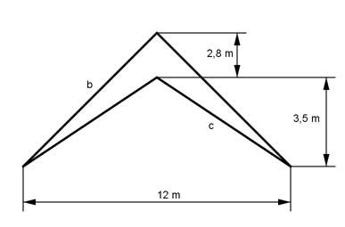
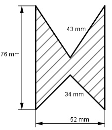
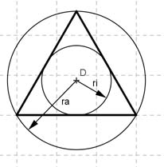
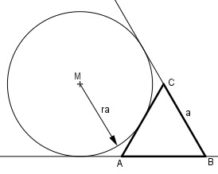
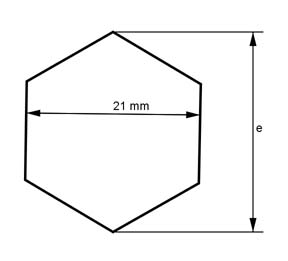

Wie löse ich Matheaufgaben?
Flächenberechnungen
Aufgabe 45 Ein rechtwinkliges Dreieck hat eine Kathete von 3 cm und eine Hypotenuse von 6 cm? Wie groß ist seine Fläche?
Aufgabe 46 Ein gleichschenklig-rechtwinkliges Dreieck mit dem Schenkel a soll die gleiche Fläche haben wie ein gleichseitiges mit der Seite s. Drücken Sie s durch a aus. s = * a
Aufgabe 47 Ein rechtwinkliges Dreieck mit der Höhe h = 3 cm hat eine Fläche von A = 12 cm². Berechnen Sie die Seiten a, b und c des Dreiecks.
Aufgabe 48 Wie groß ist die Fläche eines Dreiecks mit a = 3 cm, b = 5 cm und c = 4 cm? A = cm²
Aufgabe 49 In einem gleichschenkligen Dreieck ist die Höhe so groß wie die Basis und beträgt 8 cm. Wie groß ist seine Fläche und ein Schenkel?
Aufgabe 50 In einem Dreieck ist eine Seite = 5 cm, eine zweite = 3 cm und die Fläche = 5 cm². Wie groß ist die dritte Seite? Größere Möglichkeit = cm
Aufgabe 51 Ein gleichschenkliges Dreieck hat eine Höhe von 5 cm und einen Schenkel von 8 cm. Wie groß ist seine Fläche?
Aufgabe 52 Ein gleichschenkliges Dreieck hat eine Fläche von 10 cm² und eine Grundseite von 4 cm. Wie groß ist die Höhe auf die Grundseite und ein Schenkel? Höhe = cm
Aufgabe 53 Schenkel und Grundseite eines gleichschenkligen Dreiecks verhalten sich wie 2 : 1. Es hat eine Fläche von 6 cm². Wie groß ist ein Schenkel und die Grundseite?
Aufgabe 54 Ein gleichschenkliges Dreieck hat eine Fläche von 8 cm² und einen Schenkel von 5 cm. Wie groß ist sein Inkreisradius? Kleinerer = cm
Aufgabe 55 Ein gleichschenkliges Dreieck hat einen Umfang von 16 cm und eine Höhe auf die Grundseite von 4 cm. Wie groß sind die Fläche, die Länge eines Schenkels und die Grundseite?
Aufgabe 56 Wie groß sind für das gleichschenklige Dreieck der Schenkel a und die Strecke f?  a = cm
Aufgabe 57 Ein gleichschenkliges Dreieck hat eine Grundseite von 5 cm und Schenkel von 8,3 cm. Wie lang ist die Seitenhalbierende eines Schenkels?
Aufgabe 58 In welchem Verhältnis teilt die Seitenhalbierende eines Schenkels in einem gleichschenkligen Dreieck die entstehenden Flächen?  A1 : A2 =
Aufgabe 59 Berechnen Sie b und c. 
Aufgabe 60 Wie groß ist die Fläche des Profils?  A = mm²
Aufgabe 61 Die Seite eines gleichseitigen Dreiecks ist 3 cm. Wie groß sind der Inkreis- und Umkreisradius? 
Aufgabe 62 Berechnen Sie den Ankreisradius des gleichseitigen Dreiecks, wenn eine Dreieckseite 4 cm lang ist.  ra = cm
Aufgabe 63 Die Seiten zweier gleichseitiger Dreiecke verhalten sich wie 2 : 3. Wie verhalten sich die Flächen?
Aufgabe 64 Ein gleichseitiges Dreieck hat einen Umfang von 15 cm. Wie groß sind seine Höhe und die Fläche? A = cm²
Aufgabe 65 Der Umfang eines Stahlprofils in Form eines gleichseitigen Dreiecks beträgt 26,4 cm. Wie groß ist seine Fläche?
Aufgabe 66 Eine Sechskantschraube hat eine Schlüsselweite von 21 mm. Wie groß ist ihr Eckmaß e?  e = mm
Aufgabe 67 Ein Mast ist 23,4 m hoch. Er wird von 3 Seilen mit einer Länge von 30 m gehalten. Deren Fußpunkte bilden ein gleichseitiges Dreieck. Wie weit sind die Fußpunkte voneinander entfernt?